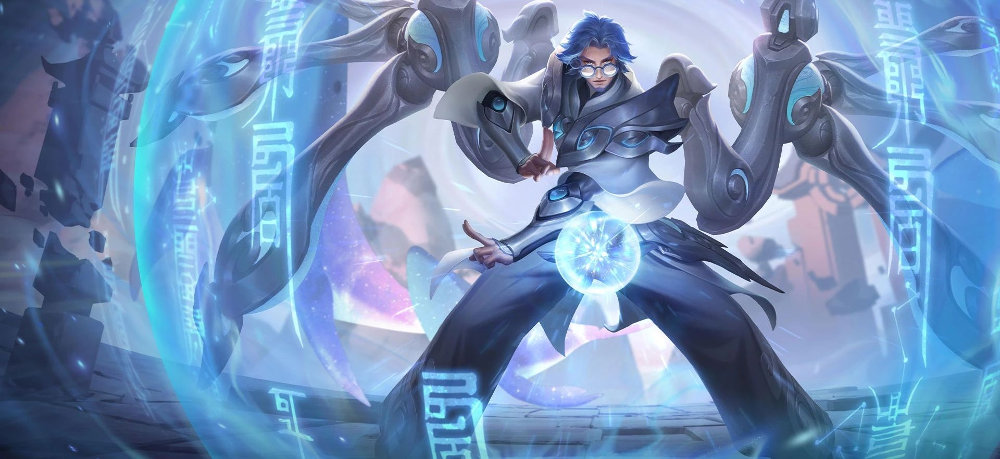
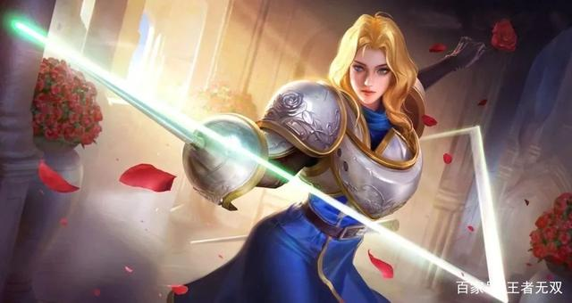

澜

- 售价：18888金币/688点券
- 难度评估：7
- 澜的定位是刺客，拥有极强的突进能力，大招独特控制，可以给敌人拉出战场，从而进行击杀 技能介绍：
- 狩猎：被动技能，澜会将所有生命值低于一定百分比的敌人视作“猎物”澜对“猎物”会造成额外的真实伤害
- 破浪：澜利用魔道力量覆盖全身进入“下潜”状态并获得加速，持续一定时间，潜水状态下的澜使用一技能会冲出水面完成破浪一击，造成额外的物理伤害和一定的减速效果。被动:在河道区域没有持续时间的限制，并且如果在一定范围内有“猎物”出现会大幅度提升加速效果。
- 断空：澜攻击附近的敌人连续造成伤害，命中一名敌人获得一个印记，最多获得三层，使用普攻会自动追击附近的敌人并清除自身一层印记，造成额外伤害，同时回复一定生命值，每触发一次追击还会减少二技能冷却时间:澜在下潜状态下释放断空会附带一个指定方向的位移，并返还一技能一半的冷却时间。
- 处决：澜将匕首扔出并眩晕路径上的敌人，短暂延迟后向匕首位置突袭，并将路径上的敌人拖到终点处进行处决，造成伤害;澜在下潜状态下释放处决不会投掷匕首，而是直接触发后续效果，并返还一技能一半的冷却时间。 连招技巧：
- 小技巧:利用印记频繁触发二技能能让澜在团战中立于不败之地
- 团战：一技能+二技能+三技能+普攻
- 逃生：一技能+三技能 召唤师技能推荐：
- 惩击、终结、闪现 铭文推荐：
- 异变、隐匿、鹰眼 推荐出装：
- 贪婪之噬 抵抗之靴 暗影战斧 宗师之力 破军 末世
- 破军加上澜的被动，进一步强化对残血目标的斩杀能力 实战技巧：
- 战斗中可以频繁触发二技能，利用追击附带的位移效果躲避技能，三技能可以反向使用将敌人强行拖到塔下或队友附近，提高击杀率 对抗技巧：
- 澜在下潜状态是可以被选中以及被攻击或控制的，找准机会控住将其秒杀，澜的三技能拥有很强的控制效果，可以利用位移技能躲避
鲁班大师

- 售价：13888金币/588点券
- 难度评估：7
- 鲁班大师的定位是辅助，拥有超强的保护能力和控制能力，可以保证己方输出的快速发育 技能介绍：
- 稷下科技:被动技能,鲁班大师的技能在施法或命中敌人时为自己添加护盾，每当机械臂充能完成时强化下一次普攻。
- 立即清扫:鲁班大师增加移速，期间选择时机挥舞机械臂对面前单位造成伤害和击退，被击退的单位命中敌人时会对其造成伤害和晕眩，取消施法会减少冷却时间
- 助手驰援：鲁班大师连接一名队友，队友确认交互后会位移到鲁班大师位置，并对路径上的单位造成伤害，技能释放和队友确认交互时，双方都会获得一层护盾，开始施法时鲁班大师增加移动速度
- 强力收纳： 鲁班大师发射出多个机械臂，命中目标后造成伤害并与之连接，连接超出一定距离后被挣脱，施法结束时所有连接的单位会被拉扯回鲁班大师身边，每个扯回单位会引发一次小范围伤害，施法期间鲁班大师增加移速 连招技巧：
- 小技巧:团战中大招尽量连接到多个敌人，打出控制效果为队友提供良好的输出环境
- 团战：三技能+二技能+一技能
- 逃生：一技能 召唤师技能推荐：
- 治疗、闪现、干扰 铭文推荐：
- 梦魇、调和、虚空 推荐出装：
- 极影 疾步之靴 极寒风晁 霜者重装 痛苦面具 魔女斗篷
- 支援型坦克出装，由于续航和移速的能力提升，可高效游走频繁支援队友 实战技巧：
- 使用三技能切入战场控住敌人，给队友制造良好的输出环境注意配合，占据有利位置为队友创造有效位移 对抗技巧：
- 鲁班大师技能多为需要引导技能，被多控制的英雄打断后收益影响较大，面对手长的英雄时，没有位移的鲁班大师，会进退两难
夏洛特

- 售价：限时活动获取
- 难度评估：7
- 夏洛特的定位是战士，拥有独特的技能强化与连招机制:可以依靠强化普攻打出高额伤害。 技能介绍：
- 七星光芒剑：任意技能命中敌人后，会强化下次其他技能为追加技，并获得一层印记，叠满三层印记后普攻将强化为追加技【七星光芒剑】，追击锁定敌人，连续造成伤害，最后一段额外造成斩杀伤害，释放期间获得免伤。
- 迅光三角剑：起手技:短暂延迟后，向指定方向释放，对路径敌人造成物理伤害，命中后增加移动速度。追加技:向指定方向迅速释放，对路径敌人造成高额伤害。命中后增加移动速度。
- 前进喷泉：起手技:向指定方向冲刺并快速刺击，造成伤害并恢复百分比生命。追加技:向指定方向冲刺，同时迅速刺击六次并减少冷却时间。造成伤害的同时恢复百分比生命。。适用于迅速突进贴近敌人或者逃生
- 破空光剑：起手技:迅速画出七道剑痕，每道剑痕造成伤害和减速，从第二道剑痕开始将只造成部分伤害。技能释放期间处于霸体状态，并获得免伤。追加技:迅速画出七道剑痕，每道剑痕造成伤害和减速，从第二道剑痕开始将只造成部分伤害。剑痕成形后发出破空光剑，对中心范围内敌人再次造成同等伤害并击飞。技能释放期间处于霸体状态，并获得免伤 连招技巧：
- 小技巧:尽可能多的打出连击，更快的解锁七星光芒剑
- 团战：一技能+二技能+三技能+普攻
- 逃生：三技能+二技能+一技能 召唤师技能推荐：
- 惩击、闪现、终结 铭文推荐：
- 异变、隐匿、鹰眼 推荐出装：
- 抵抗之靴 暗影战斧 极寒风暴 破军 名刀·司命 不死鸟之眼
- 半肉装，提高生存能力，在团战中迅捷突进，游离自如 实战技巧：
- 夏洛特的追加技效果绝伦且更加迅捷，尽量保证每个后续释放的技能都是追加技，夏洛特的七星光芒剑威力非凡，尽量精准命中，维持普攻追加技的强化进度 对抗技巧：
- 有意识的躲避或者打断夏洛特的技能都可以阻止她的技能强化，降低她的威胁力度，夏洛特只有一个强化三技能的击飞硬控，要注意躲避